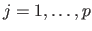
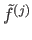
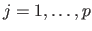
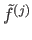
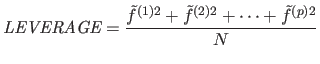
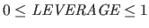
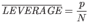
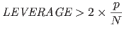
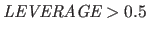

Next: 多変量分散分析 Up: 研究法や分析法に関するメモ Previous: と
多変量外れ値を検出するために、主成分分析を利用しててこ比 leverage を各ケースについて計算することが有効17。
変数の数を  、標本サイズを
、標本サイズを  、
、  番目（

）の標準化された主成分得点を

とすると、
番目（

）の標準化された主成分得点を

とすると、
|  | (8.7) |
一般に、
|  | (8.8) |
|  | (8.9) |
てこ比の値が大きいほど全体の傾向から外れており、平均の2倍を超えるケース
|  | (8.10) |
|  | (8.11) |
主成分分析は、関数 princomp() で実行できる18。 引数として、
結果には、以下の内容が含まれる。
これを用いて、data01 からてこ比を算出し、平均の2倍を超えるケースを除いたデータ data01.omit を作成するには、次のようにすれば良い。
> prin <- princomp(x=data01, cor=T) # 相関行列を用いた主成分分析 > std.prin <- scale(prin$scores) # 標準化された主成分得点を算出 > leverage <- apply(std.prin^2, 1, sum)/dim(std.prin)[1] # てこ比の算出 > is.out <- (leverage > 2*mean(leverate)); sum(is.out) # 外れ値とその数 > data01.omit <- data01[is.out!=T,] # 外れ値を除去したデータ
Taichi Okumura